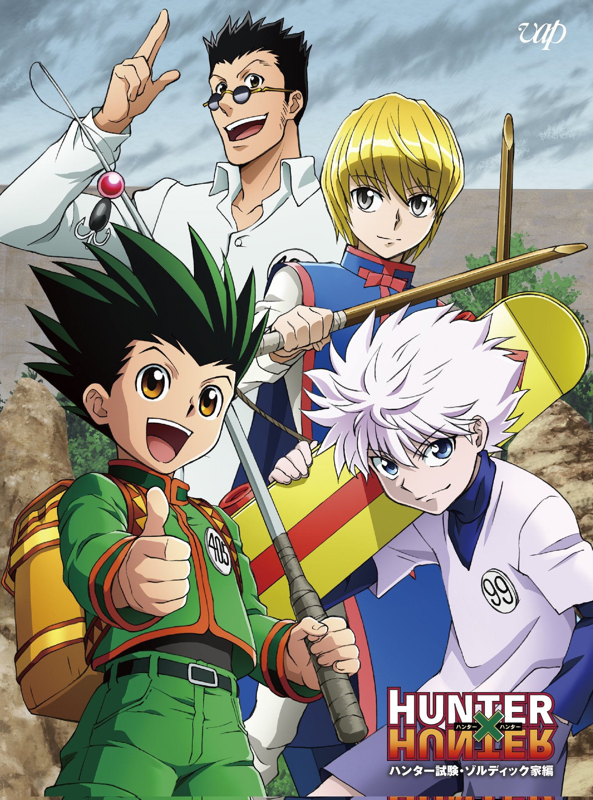

My Hero Academia

Synopsis:
The appearance of "quirks," newly discovered super powers, has been steadily increasing over the years, with 80 percent of humanity possessing various abilities from manipulation of elements to shapeshifting. This leaves the remainder of the world completely powerless, and Izuku Midoriya is one such individual.
Since he was a child, the ambitious middle schooler has wanted nothing more than to be a hero. Izuku's unfair fate leaves him admiring heroes and taking notes on them whenever he can. But it seems that his persistence has borne some fruit: Izuku meets the number one hero and his personal idol, All Might.
All Might's quirk is a unique ability that can be inherited, and he has chosen Izuku to be his successor!
Enduring many months of grueling training, Izuku enrolls in UA High, a prestigious high school famous for its excellent hero training program, and this year's freshmen look especially promising. With his bizarre but talented classmates and the looming threat of a villainous organization, Izuku will soon learn what it really means to be a hero.
Information:
- Genre: Action
- Air Date: Apr 3, 2016
- Episodes: 132
- Producers: Dentsu, Mainichi Broadcasting System, Movic, TOHO animation, Shueisha
- Animation Studio: Bones
Steins;Gate

Synopsis:
Eccentric scientist Rintarou Okabe has a never-ending thirst for scientific exploration. Together with his ditzy but well-meaning friend Mayuri Shiina and his roommate Itaru Hashida, Rintarou founds the Future Gadget Laboratory in the hopes of creating technological innovations that baffle the human psyche.
Despite claims of grandeur, the only notable "gadget" the trio have created is a microwave that has the mystifying power to turn bananas into green goo. However, when Rintarou decides to attend neuroscientist Kurisu Makise's conference on time travel, he experiences a series of strange events that lead him to believe that there is more to the "Phone Microwave" gadget than meets the eye.
Apparently able to send text messages into the past using the microwave, Rintarou dabbles further with the "time machine," attracting the ire and attention of the mysterious organization SERN.
Due to the novel discovery, Rintarou and his friends find themselves in an ever-present danger. As he works to mitigate the damage his invention has caused to the timeline, he is not only fighting a battle to save his loved ones, but also one against his degrading sanity.
Information:
- Genre: Drama, Sci-Fi, Suspense
- Air Date: Apr 6, 2011
- Episodes: 24
- Producers: Frontier Works, Media Factory, Movic, AT-X, Kadokawa Pictures Japan, Nitroplus
- Animation Studio: White Fox
Hunter X Hunter

Synopsis:
Hunters devote themselves to accomplishing hazardous tasks, all from traversing the world's uncharted territories to locating rare items and monsters. Before becoming a Hunter, one must pass the Hunter Examination—a high-risk selection process in which most applicants end up handicapped or worse, deceased.
Ambitious participants who challenge the notorious exam carry their own reason. What drives 12-year-old Gon Freecss is finding Ging, his father and a Hunter himself.
Believing that he will meet his father by becoming a Hunter, Gon takes the first step to walk the same path. During the Hunter Examination, Gon befriends the medical student Leorio Paladiknight, the vindictive Kurapika, and ex-assassin Killua Zoldyck.
While their motives vastly differ from each other, they band together for a common goal and begin to venture into a perilous world.
Information:
- Genre: Action, Adventure, Fantasy
- Air Date: Oct 2, 2011
- Episodes: 148
- Producers: VAP, Nippon Television Network, Shueisha
- Animation Studio: Madhouse
Full Metal Alchemist: Brotherhood

Synopsis:
After a horrific alchemy experiment goes wrong in the Elric household, brothers Edward and Alphonse are left in a catastrophic new reality. Ignoring the alchemical principle banning human transmutation, the boys attempted to bring their recently deceased mother back to life.
Instead, they suffered brutal personal loss: Alphonse's body disintegrated while Edward lost a leg and then sacrificed an arm to keep Alphonse's soul in the physical realm by binding it to a hulking suit of armor. The brothers are rescued by their neighbor Pinako Rockbell and her granddaughter Winry.
Known as a bio-mechanical engineering prodigy, Winry creates prosthetic limbs for Edward by utilizing "automail," a tough, versatile metal used in robots and combat armor. After years of training, the Elric brothers set off on a quest to restore their bodies by locating the Philosopher's Stone—a powerful gem that allows an alchemist to defy the traditional laws of Equivalent Exchange.
As Edward becomes an infamous alchemist and gains the nickname "Fullmetal," the boys' journey embroils them in a growing conspiracy that threatens the fate of the world.
Information:
- Genre: Action, Adventure, Drama, Fantasy
- Air Date: Apr 5, 2009
- Episodes: 64
- Producers: Aniplex, Square Enix, Mainichi Broadcasting System, Studio Moriken
- Animation Studio: Bones
Bleach

Synopsis:
For as long as he can remember, high school student Ichigo Kurosaki has been able to see the spirits of the dead, but that has not stopped him from leading an ordinary life. One day, Ichigo returns home to find an intruder in his room who introduces herself as Rukia Kuchiki, a Soul Reaper tasked with helping souls pass over.
Suddenly, the two are jolted from their conversation when a Hollow—an evil spirit known for consuming souls—attacks. As Ichigo makes a brash attempt to stop the Hollow, Rukia steps in and shields him from a counterattack.
Injured and unable to keep fighting, Rukia suggests a risky plan—transfer half of her Soul Reaper powers to Ichigo. He accepts and, to Rukia's surprise, ends up absorbing her powers entirely, allowing him to easily dispatch the Hollow.
Now a Soul Reaper himself, Ichigo must take up Rukia's duties of exterminating Hollows and protecting spirits, both living and dead. Along with his friends Orihime Inoue and Yasutora Sado—who later discover spiritual abilities of their own—Ichigo soon learns that the consequences of becoming a Soul Reaper and dealing with the world of spirits are far greater than he ever imagined.
Information:
- Genre: Action, Adventure, Fantasy
- Air Date: Oct 5, 2004
- Episodes: 366
- Producers: TV Tokyo, Aniplex, Dentsu, TV Tokyo Music, Studio Kelmadick, Shueisha
- Animation Studio: Pierrot
Popularity Rankings
(Based off MyAnimeList)
| Name |
Ranking |
| Full Metal Alchmeist: Brotherhood |
#3 |
| My Hero Academia |
#6 |
| Hunter X Hunter |
#10 |
| Steins;Gate |
#13 |
| Bleach |
#40 |